It has been over a month since my last article on compiling Rust to .NET - and I had made quite a bit of progress! I had managed to fix a lot of bugs, and get stack unwinding(Rust's way of handling "panics") to work. There have been also some architectural changes: I reworked the way I reperesent .NET assemblies.
CIL trees
CIL, or Common Intermediate Language, is what is actualy stored in a .NET assembly. s is what I am compiling Rust code into - so it is really important that the code handling CIL is robust, and can be easily extended. Previosly, I picked a very simple way to store CIL. In an assebmly, Ops are stored in a contigus array. They push and pop values from the evaluation stack.
This format is great for saving disk space, but it does not store some of the information that is curcial to me. For optimizing and validating CIL, the way ops are related to each other is key. Take a look at this sequence of ops:
ldarg.0
ldarg.1
sizeof T
mul
add
ldobj T
retIt is not imedieately obvious where the values each op operates on come from. What values are added? Which ones are the inputs of the mul instruction? Using graphs makes those questions trivial to answer:

Looking at this graph, it is very easy to see which ops depend on what - and that makes it easy to optimize such a tree. Trees also have another interesting property - only the "root" of a tree may write4 to any variable. By restricting instructions such as "stind.i8"(set 8byte int at adress) or "stloc.n" (set local varaible n) to only appear in the root of a tree, I can very easily check if trees may be reordered.
Another neat thing about "CIL trees" is that they are validated at construction. If I removed one instruction form the last example, it would be quite hard to see the problem:
ldarg.0
ldarg.1
sizeof T
mul
ldobj T
retBut, if we use graphs instead, it becomes clear that this sequence of CIL ops is not valid.
You know what is even better? Due to the way the nodes of a tree are coded, it is not possible for a mul instruction to have 3 inputs. A mul node can hold references to exactly 2 other nodes. No more, no less. All nodes, besides Call, have a fixed ammount of inputs and exactly one output. There is no way to make a mistake when constrcuting them.
Looking back, I fell like I should have taken this approach from the start. At the time, I tought using "linear" ops would make the codebase simpler, but, in hindsigth, the added complexity is well worth it.
Now, it is not all sunshine and roses. CIL trees are a good abstraction, but they can't reperesent all possible CIL. The dup instruction has one input, but two outputs. You can't represent a method containing it using a simple tree.

You may think: this is not a big deal, you can just allow a node to be referenced twice.
But allowing that would force me to consider the exact order of values on the evaluation stack. A small change here could lead to a lot of bugs. I want to keep the representation simple and idiot-proff - I know I can't trust myself not to screw this up.
This means that the main optimizer can't use dup: it must be inserted after trees are "falttened". Even if I don't use this instruction at all, the performance impact is not noticable. The benchmark results are within the noise range.
This representation also does not support one neat trick related to branching. In CIL, if all branches have the same ammount and type of values on their stack, they can join, and the value may be used later. This makes something like this possible:
ldarg.0
ldc.i4.0
blt NEGATIVE:
// We push a float onto the stack
ldc.r4 1.0
br RESULT
NEGATIVE:
// We push a float onto the stack
ldc.r4 -1.0
RESULT:
// The "negative" and "positive" branches both pushed a float on the stack, so we can pop and return it here!
retIt is a quite nice trick, but it is just that - a trick. Does it reduce method sizes, potentaily improving preformance?
Yes.
Are the perofmrance gains big enough to bother right now?
Nope.
So, I chose to go with a more convienent abstraction: it is not perfrect, but more than good enough.
The project got tested on ARM!
I had wanted to test the cross-platform potential of Rust on .NET for quite a while, but I did not have any devices to test with.
Turns out, Rasberry Pis don't like being stepped on, and solder paste, hot glue and prayers can only go so far, even if you are very sorry.
Thankfully, Rasberry Pis are not the only ARM devices in the world. After some struggle, I managed to get a Rust compiler and the .NET runtime to work on my Android phone.
I did have to raise the timeout limit of some tests significantly, but, in the end, the project built and passed all the tests on ARM!
I also loaded some Rust-.NET assemblies from my PC, and conformed they work on both machines. So, while the project is mainly developed on x86_64, ARM works too!
side note: I tired to test it on a RISC-V emulator, but .NET is not supported there :(
Stack unwinding
Stack unwiding is one of the ways Rust handles panics. For those unfailiar with the language, they are kind of like exceptions. The big difference is that they are meant to be used for super special,' "everything-is-on-fire" scenarios. Rust uses the Result type for "normal" errors, but the ability to handle panics propely is still very important. All the tests relly on this: if a test panics, the runner should be able to handle it. So, getting this up-and-running was very important.
I had been able to use the .NET exception handling mechanisms to implement stack unwinding - but there were some hiccups. A lot of concepts sadly do not map very nicely.
The first issue was how restrictive exception handlers are. They are well suited for their job - but I wanted them to do a bit more. In Rust, multiple handlers can share code: the handler A may execute and then jump into the middle of the handler B. In fact, it is quite hard to say any cleanup block "belongs" to any particular handler: they are all intermingled.
.NET really did not like that. The runtime sadly refused to run my abominations.
In the end, I had to have a separate copy of all needed cleanup blocks for each handler. This is not very efficent, but, after some optizations, it is tollerable.
This was not the end of my struggles: the runtime is also very picky about the way you exit form a protected region of code. You can't just jump out of a try block - you have to use the leave instruction.
The reasoning behind this is a bit compilcated, and I am not sure I fully understand it myself, but I don't have to understand why a rule exists to follow it.
Since you have to use the leave instruction, branching looks a bit wierd - in code generated by my project and the C# compiler. In order to jump out of a try block using a conditional, you have to do that indirectly:
.try{
ldarg.0
ldloc.1
beq LEAVE_TRY:
// ...
LEAVE_TRY:
leave OUTSIDE_TRY
}
OUTSIDE_TRY:
// ...this may seem inefficent, but it is what Roslyn does. I assume the C# compiler developers know the runtime better than me, so - if this is what they do, it should be a good soultion.
But, after all this work - stack unwinding works! It is not perfect, and I am sure I will uncover some issues in the future, but it is a great leap forwards for the project.
ZSTs
There is one more concept that did not map well to .NET - Zero Sized Types. They are a bizzare feature of Rust which is not as uselles as it sounds. ZSTs are often used as marker types - for example, with generics. Suppose you need to distinguish between two identical databases. The way you access them and the data you need to access them is identical - but one of them is a developement enviorment. You could coppy their defintions and have 2 identical types - but that fells clunky and error-prone. In Rust, you can make them generic, and use zero-sized marker types:
// No fields, consumes no space, and is present only during compilation!
struct Production;
struct Developement;
struct Database<Kind>{
//..
}
impl Database<Developement>{
// Can only be called on a developement database, and will throw a compiler errors if you try to do otherwise!
pub fn test_function_dont_use_in_prod(&mut self){
//..
}
}This is a nice abstraction - it has no runtime cost, but helps you avoid mistakes.
It is not so nice to implement in .NET. In .NET, each type has a size of at least 1. Even when you ask the runtime very nicely, you will not get a zero-sized type. Peroid. If you accidentaly forget about that, you will see some really "fun" side-effects. By far, my favoirte one was related to Rust enums. I used to place the enum variant type after the tag - which is fine, untill you have an enum variant without any fields. It's size is supposed to be zero, and it lays at the very end of the type. If it really had the size of 0, nothing would happen - but it does not. When the type it was stoed in was copied, it was copied too. So, instead of coppying 8 bytes, the runtime copied 8 + 1(the size of "zero" sized field) bytes. Because of that, it has overriten the very next bit of data - which just so happened to store some pretty important data. This is not the fault of the runtime - this is something that is explcitily not allowed.
Still, this forced me to be quite a bit more carefull when it comes to type sizes. I am pretty sure I plugged all the major holes realted to ZSTs, but I am also expecting to find more of them.
Native libs
This feature is not yet finished - but I plan on allowing you to reference native shared libraries in Rust code compiled for .NET. This basicaly involves the linker autogenerating the necesary PInvoke method declarations. This featrue already works for libc, which made testing a whole lot easier. Extending it to all shared libraries would make a lot of more complex crates work out of the box - but this is still a feature I am not certain about.
Since I am able to use libc, I had been able to test the compiler using a modified version of rustlantis. It is a rust compiler fuzzer, which can detect compiler bugs automaticaly. It did uncover quite a bit of issues, but it makes me more optimistic for the futrure of the project. If I can plug all the holes it finds, I would be much more confiedent in the relayability of this project.